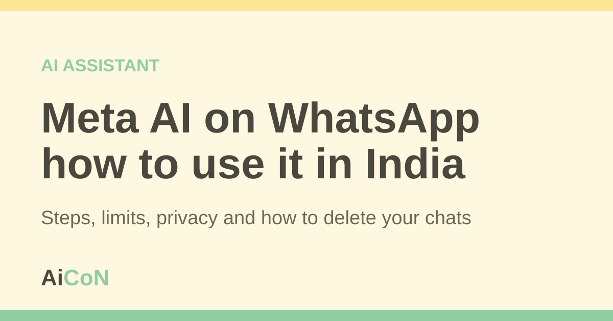

Meta AI on WhatsApp: how to use it in India
Meta AI is an AI helper that lives inside WhatsApp. You type a question, and it answers in the chat. Meta says it is free. This guide shows how to open it, what to ask, and what to be careful about.

What is Meta AI?
Meta AI is a chatbot made by Meta, the company that owns WhatsApp. It writes replies using artificial intelligence (AI). That means its answers are generated by a computer program, not by a person.
WhatsApp says you can ask it questions, get ideas and talk about your interests. It is optional. You do not have to use it, and your normal chats work the same.
Does it work in India?
Yes. Meta announced Meta AI for India in June 2024, on WhatsApp, Facebook, Messenger and Instagram. It started in English. In July 2024 Meta added Hindi and Hindi in Roman letters.
WhatsApp's help page adds one note. Meta AI is available in limited countries, and it may not have reached your phone yet, even if others near you have it. So if you cannot see it, that is not a mistake on your side.
How to open Meta AI, step by step
- Update WhatsApp to the latest version from the Play Store or App Store.
- Open WhatsApp and go to the Chats tab.
- Tap the Meta AI icon, a ring of colours. You can also tap the search bar at the top, type a question and tap Ask.
- If WhatsApp asks you to read and accept the terms, read them, then accept.
- Pick one of the suggested questions, or type your own, then send.
On a computer, the same steps work in WhatsApp Web and in the Windows and Mac apps. The exact button names can change after an update.
What can you ask?
- Simple questions, such as "What is the difference between a debit card and a credit card?"
- Ideas, such as places to visit on a weekend trip.
- Help with wording, such as making a message sound polite.
- In a group chat, you can forward a message to Meta AI and add a question about it.
Cost and limits
| Cost | Meta described Meta AI as free when it launched in India. The WhatsApp help page does not list a price. Your mobile data is used as usual. |
|---|---|
| Languages | English, Hindi and Hindi in Roman letters were announced for India. WhatsApp also says you can chat in any language, but some areas depend on the languages set on your phone. |
| Phones | Android, iPhone, WhatsApp Web, Windows and Mac are listed on the help page. |
| Not available to you? | Meta says access is rolling out in limited countries. If you do not see the icon, update the app and check again later. |
Be careful with these things
- AI can be wrong. Check facts about health, money, law or exams on an official site.
- Do not type your Aadhaar number, bank details, OTPs or passwords into any AI chat.
- Meta says it uses AI chats as described in its Privacy Policy. By using the feature, you agree to Meta's AI Terms of Service.
- Your normal chats stay private. WhatsApp says content from your personal chats stays on your device unless you send it to Meta AI.
How to delete your Meta AI chats
WhatsApp says you can delete single chats with Meta AI. You can also ask Meta to delete information you shared with Meta AI. The steps are on the WhatsApp Help Center page "How to chat with Meta AI".
Frequently asked questions
Is Meta AI free?
Meta described it as free when it came to India in June 2024. WhatsApp's help page does not mention any charge.
Can people see my chat with Meta AI?
It is a separate chat with Meta AI. Other people on WhatsApp do not see it. Meta uses AI chats under its Privacy Policy.
Does Meta AI read my WhatsApp chats?
WhatsApp says content from your personal chats stays on your device. Meta can read messages that mention @Meta AI or that people choose to share with Meta AI. It cannot read the other messages in your personal chats.
Can I turn it off?
It is an optional service. WhatsApp's help page calls it optional. If you do not tap it, you are not using it.
Can it speak Malayalam?
WhatsApp says you can chat in any language. Meta's India announcements name English and Hindi. Try Malayalam and check the answers carefully.
Sources: How to chat with Meta AI (WhatsApp Help Center), How to ask Meta AI in the WhatsApp search bar, Meta AI arrives in India (Meta, June 2024), Meta AI is now multilingual (Meta, July 2024). Checked 6 October 2026.